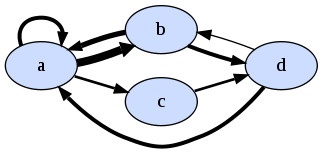
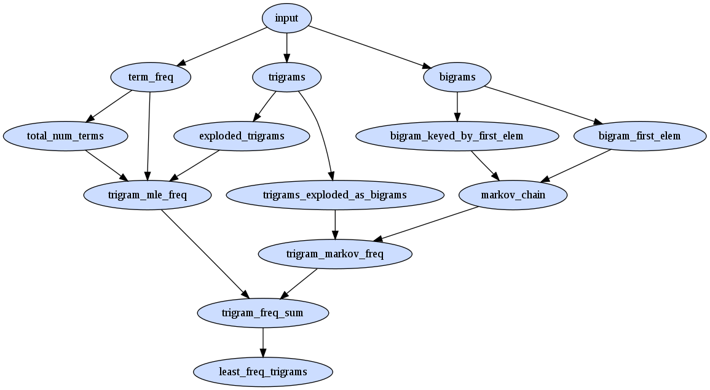

<< take 2: term frequency index part 4: but does it scale? >>
using term frequency was a good start but it relies too much on all the terms being infrequent which is not really that fair. for example given the 'stop your jibber and jabber man!' we might like to conclude that 'jibber and jabber' is a reasonable sip even though it includes a common word like 'and'.
what we need is a way to take into account the sequence of words, and markov chains are a great way to do this. i've talked about , before in other experiments (eg this one) so go have a read if you're new to them.
let's ignore term frequencies completely and trying using a markov chain to find the sips
consider the sequence of characters abaabdabaabdabaabdacdbacd ( the astute reader might notice this is the string 'abaabd'*3 + 'acdbacd' contrived to have 'c' as a rare character and 'a' as a common one )
considering character to character transistion we can build the markov chain
a -> a = 3/11 (0.27) (ie 'a' appears 11 times and is followed by 'a' 3 of those times) a -> b = 6/11 (0.55) a -> c = 2/11 (0.18) b -> a = 4/7 (0.57) b -> d = 3/7 (0.43) c -> d = 2/2 (1.00) d -> a = 3/4 (0.75) d -> b = 1/4 (0.25)here's a pic where edge thickness is proportional to the number of transistions 
we can define sip_markov(abc) = p(a->b) * p(b->c) eg from the above markov chain
p(dab) = p(d->a) * p(a->b) = 0.750 * 0.545 = 0.409 p(bac) = p(b->a) * p(a->c) = 0.571 * 0.182 = 0.104so bac, being less probable, is more of a sip than dab.
calculating sip_markov for all trigram sequences we get...
dab = da * ab = 0.750 * 0.545 = 0.409 bda = bd * da = 0.429 * 0.750 = 0.321 aba = ab * ba = 0.545 * 0.571 = 0.312 cdb = cd * db = 1.000 * 0.250 = 0.250 abd = ab * bd = 0.545 * 0.429 = 0.234 acd = ac * cd = 0.182 * 1.000 = 0.182 baa = ba * aa = 0.571 * 0.273 = 0.156 aab = aa * ab = 0.273 * 0.545 = 0.149 dba = db * ba = 0.250 * 0.571 = 0.143 dac = da * ac = 0.750 * 0.182 = 0.136 bac = ba * ac = 0.571 * 0.182 = 0.104
it's interesting to note that acd and cdb are quite high when they shouldn't really be since both c and d are rarish characters. why is this?
since c is always followed by d and markov chain's are only concerned with the transistions it results in a mulitplier of 1, even though c is very rare.
so it looks like we need a combination of both the transistion probabilities from the markov chain and the term frequency probabilities.
how might we define a combined metric sip_combined(abc) in terms of sip_mle('abc') and sip_markov('abc')?
recall sip_mle('abc') = p(a) * p(b) * p(c) and sip_markov('abc') = p(a -> b) * p(b -> c)
i started by using the geometric mean which seemed a natural choice.
sip_combined('abc') = √ ( sip_mle('abc') * sip_markov('abc') )
it gave reasonable results but it turned out to be overwhelmed by the cases of three consecutive hapax legomemon which all result in
the same sip_combined value.
here is the derivation of an variation on the geometric mean that weighted the components differently. i use == to denote an operation that produces a value that will retain order since we only really care about finding the least probable without caring about the exact values
sip_combined('abc')
= √ ( sip_mle('abc') * sip_markov('abc') )
== sip_mle('abc') * sip_markov('abc')
= p(a) * p(b) * p(c) * p(a -> b) * p(b -> c)
= e ^ ( ln(p(a)) + ln(p(b)) + ln(p(c)) + ln(p(a -> b)) + ln(p(b -> c)) )
== ln(p(a)) + ln(p(b)) + ln(p(c)) + ln(p(a -> b)) + ln(p(b -> c))
= x + y + z + u + v # save some writing
== mean(x, y, z, u, v)
now instead of treating the components (x,y,z,u,v) equally we can take more of a weighted sum approach by grouping the lme components (x,y,z) and
the markov components (u,v) seperately first giving a new definition for sip_combined...
sip_combined('abc')
= mean( mean(x, y, z), mean(u, v) )
== mean(x, y, z) + mean(u, v)
though it's not obvious from small scale testing whether this gives a fundamentally better result it doesn't seem any worse and it
doesn't suffer from the previously mentioned problem of hapax legomemon solutions banding the results.
term probabilities are
a 11/25 == ln(11/25) = -0.82 b 7/25 == ln(7/25) = -1.27 d 5/25 == ln(5/25) = -1.60 c 2/25 == ln(2/25) = -2.52
and recall markov chain probabilities are
a -> a = 3/11 == ln(3/11) = -1.29 a -> b = 6/11 == ln(6/11) = -0.60 a -> c = 2/11 == ln(2/11) = -1.70 b -> a = 4/7 == ln(4/7) = -0.55 b -> d = 3/7 == ln(3/7) = -0.84 c -> d = 2/2 == ln(2/2) = 0.00 d -> a = 3/4 == ln(3/4) = -0.28 d -> b = 1/4 == ln(1/4) = -1.38and combining sip_mle and sip_markov using the weighted geometric mean gives...
bac = (-1.273 -0.821 -2.526)/3 + (-0.560 -1.705)/2 = -4.620/3 -2.264/2 = -2.672 dac = (-1.609 -0.821 -2.526)/3 + (-0.288 -1.705)/2 = -4.956/3 -1.992/2 = -2.648 acd = (-0.821 -2.526 -1.609)/3 + (-1.705 -0.000)/2 = -4.956/3 -1.705/2 = -2.504 dba = (-1.609 -1.273 -0.821)/3 + (-1.386 -0.560)/2 = -3.703/3 -1.946/2 = -2.207 abd = (-0.821 -1.273 -1.609)/3 + (-0.606 -0.847)/2 = -3.703/3 -1.453/2 = -1.961 aab = (-0.821 -0.821 -1.273)/3 + (-1.299 -0.606)/2 = -2.915/3 -1.905/2 = -1.924 baa = (-1.273 -0.821 -0.821)/3 + (-0.560 -1.299)/2 = -2.915/3 -1.859/2 = -1.901 bda = (-1.273 -1.609 -0.821)/3 + (-0.847 -0.288)/2 = -3.703/3 -1.135/2 = -1.802 dab = (-1.609 -0.821 -1.273)/3 + (-0.288 -0.606)/2 = -3.703/3 -0.894/2 = -1.681
finally how did will we generate the markov chain using map reduce semantics? it's actually very similiar to the task required for building the term frequencies
consider abacabc we want a markov chain
a > b 2/3 a > c 1/3 b > a 1/2 b > c 1/2 c > a 1/1
first off we need the frequencies of bigrams, and a version of them keyed by the first term. these values make up the nominators of the transistion probabilites in the chain
bash> rake bigrams bash> rake cat dir=bigrams ab 2 ac 1 ba 1 bc 1 ca 1 bash> rake bigram_keyed_by_first_elem bash> rake cat dir=bigram_keyed_by_first_elem a.1f ab 2 a.1f ac 1 b.1f ba 1 b.1f bc 1 c.1f ca 1
then we need the frequencies of the 'from' state. these values make up the denominators of the transistion probabilites in the chain
bash> rake bigram_first_elem bash> rake cat dir=bigram_first_elem a.0p 3 b.0p 2 c.0p 1
we can them join these last two
bash> rake markov_chain bash> rake cat dir=markov_chain ab.0p 0.66 ac.0p 0.33 ba.0p 0.5 bc.0p 0.5 ca.0p 1
once we have our markov chain model we can join it to the trigrams in a similiar fashion to how we joined the term frequencies with the trigrams on the last page
here's the new set of map reduce passes required... 
how does the inclusion of markov_sip change the sips on our 8 document corpus?
| doc | sip1 | sip2 | sip3 |
| fbncc10 | and numbers edited | university of quebec | structure in 2000 |
| 8sknn10 | think a scrimption | by she noiselessly | he been disgusted |
| gm77v10 | he the venom | the not colloquial | the not unamiable |
| 7hmvg10 | for on dormant | and english morello | to deep carmine |
| dwqoh10 | thinks and nobobody | when one watches | the indifferent routinists |
| 7stir10 | or la nouvelle | to poor ellen | poor of marlowe |
| esper10 | in out ow | a old maljunec | in day aye |
| 8prmt10 | de by belmekhira | in die ferse | sie in feierlichem |
sort of interesting... there are some further improvements that could be made;
but does it scale?
<< take 2: term frequency index part 4: but does it scale? >>
sept 2009